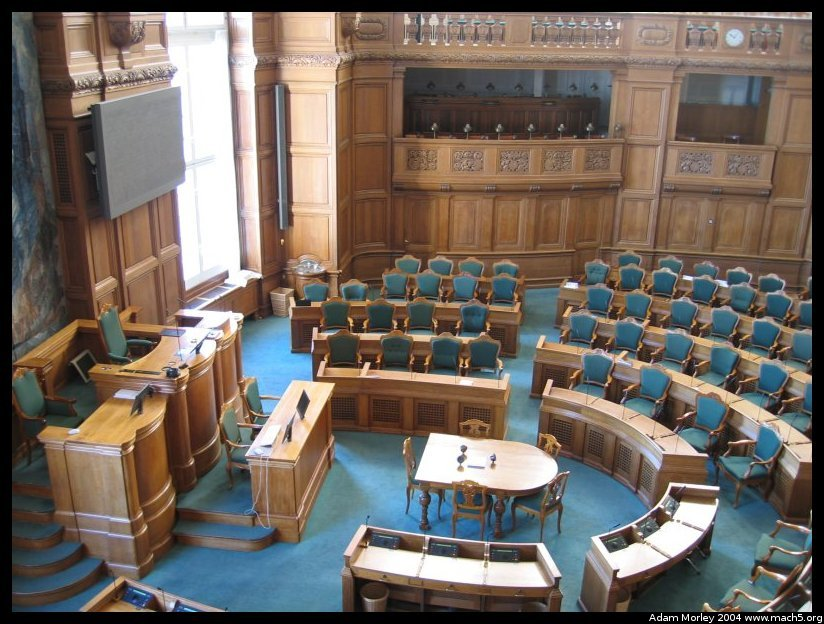

Christiansborg Castle (slot), the former residence of the King of Denmark, now houses the offices and chambers of the Danish Parliament. We happend to get a guided tour of parliament, but everyday during Danish Policits, Jacob Buksti (a member of the Danish Parliament) gave us an inside look. This is the same Jacob Buksti who used to be transportation minister and pushed for safer speed limits, and was later caught speeding in his BMW on the highway.
We only came to know this little tidbit because his picture was on the back of the newspaper, wich a subtitle in Danish that we couldn't read. So he had to explain the situation to the class. Quite funny.
The Danish parliament, also called Folketinget governs the country. The website just mentioned does have an English section.
Christiansborg from the sort of west side. Much prettier in the spring.
The famous (or infamous?) Jacob Buksti. I'm sure he rather enjoyed when I would show up to class with a soft ice and sit, attentively licking my ice cream.
I accidentally took a picture of the security booth, which produced much wild gesturing and so on. It didn't look like a security booth. No automatic weapons, bulletproof glass, etc. It was clear at that moment that I still had not recalibrated the brain for a more friendly country.
The stairway in the entrance. Definately not a shabby castle.

The actual chamber of parliament, complete with 179 seats for the Members of Parliament. Four come (two each) from Greenland and the Faroe Islands. Both have limited home-rule, but still are part of the Danish state. Interestingly (Trivial Pursuitists), Denmark is the largest country in Europe by land area (because of Greenland). Greenland is also the only "state" (I say state, because it's part of Denmark, but yet not) to leave the European Union. Leaving the European Union is a complicated (and expensive!) process, which Greenland was able to do only because Denmark ponied up the pennies.Another trivia piece: Denmark (as of today, 2004-10-25) still uses the Kroner (DKK, Dansk Kroner, or Danish Crown), which has a fixed exchange rate to the Euro (formerly, it was pegged to the Deutsch Mark, which became the standard for the Euro). There are numerous reasons for this, not the least of which (in my opinion) is that the 20 DDK coin (about $3.50) is quite handy. This does mean their smallest paper note is worth about $8 (US). An $8 paper note can be dangerous when one is used to a $1 paper note. Anyways, the DKK is also used on Greenland. So once, at the Ministry of Finance, I asked what would happen if Denmark went to the Euro since Greenland wasn't in the EU anymore. It was clearly unsettling to the presenter, as he didn't know. I asked the question at about 14:30, and at 8:30 the next morning my prof had received an answer. Greenland would end up choosing between the Euro and some other currency, and have to get approval from those who controlled the currency. Or they could make their own currency, which would be insane.
The other 175 seats are allocated based on geographic region, and total votes cast for a given party. The algorithm is rather complicated compared to the simple method of the United States, but much more functional at including smaller polictical parties. Of course, normal (ie: not the USA) countries have more than two (viable) political parties, so perhaps this explains why a more complicated electoral process can be used in such places.
It should also be explained that no party obtains a majority in parliament, so the government (Prime Minister, etc.) is formed by multiple parties in coalition. In fact, it is quite normal for the parties forming the government to be a minority of the total seats. Such is the nature of a true multi-party system.
The public galleries. All sessions are open to the public, but probably not terribly interesting to non-Danish speakers.
The parliament itself offers tours in Danish (and English!) daily last time I checked. It's close to central Copenhagen, and worth a trip if you're in town.
Adam can be reached at adam dot morley at gmail dot com